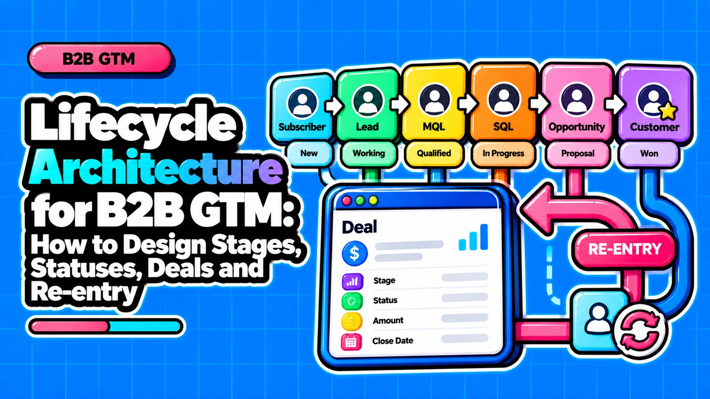

Lifecycle Architecture for B2B GTM: How to Design Stages, Statuses, Deals and Re-entry

Direct answer: Design lifecycle as separate layers rather than one field. Lifecycle stage is a durable, mostly forward-moving relationship state, lead status is a sales-owned micro state that can move back, and deal stage is tracked per opportunity. Every transition needs criteria, an owner, a clock and a timestamp, and history is never overwritten.
- Separate the control layers: stage, status, deal stage, score, account state and usage state each need one owner and one direction of movement.
- Test every proposed stage: add a stage only when it is a durable buying-state change that alters reporting or treatment; otherwise use status.
- Keep history append-only: first-pass timestamps are never overwritten, while current state changes through status, a recycle stage or re-entry fields.
- Match the unit to complexity: person-level stages suit simple sales, and complex purchases need account, opportunity and buying-group state.
- Specify every transition: criteria, trigger, owner, clock, timeout, timestamp and regression path make a stage change implementable.
Questions this article answers
- What is lifecycle architecture, and how is it different from a funnel diagram?
- How do lifecycle stage, lead status and deal stage differ?
- Should lifecycle stages be forward-only, or should records be able to re-enter?
- Should you track lifecycle at the person, account, opportunity or buying-group level?
- How do scores, product usage and post-sale states attach to the lifecycle?
- What are the six control layers in a lifecycle, and how do they compare?
- What does every lifecycle transition need to be specified?
- How do HubSpot, Salesforce and Marketo map onto the same lifecycle?
- What are the common lifecycle failure modes, and how do you govern against drift?
- In what order should you build a lifecycle architecture?
- What design rules should you keep?
- Plus 4 FAQs answered below
What is lifecycle architecture, and how is it different from a funnel diagram?
Lifecycle architecture is the designed system of states, allowed paths, triggers, owners and timestamps that records where a person, account or deal stands in the relationship.
Digital Pi's Marketo method describes a lifecycle model as three parts: stages (where records are counted), flows (allowed paths) and triggers (the logic for moving). That is the minimum an architecture must specify. Three artifacts are easy to confuse with it:
- Funnel diagram: names stages and their order, but says nothing about who moves a record or what gets stored.
- CRM picklist: stores one current value, with no criteria, allowed paths or history.
- Architecture: defines who may change a value, when, why, and what is recorded each time.
The most common design mistake is asking one field to do the work of several layers, so that sales activity, buying state, deal progress and engagement all share one picklist. Two prerequisites apply before any layer is built. Practitioner guidance says default stage definitions are not finished definitions, and MQL means nothing without documented behavioral and fit criteria. A RevOps Co-op practitioner post advises designing stages from stakeholder interviews rather than from system limits.
How do lifecycle stage, lead status and deal stage differ?
Lifecycle stage records a durable buying-state change, lead status records sales activity and can move back, and deal stage tracks each opportunity; one contact can hold many deals.
HubSpot shows the macro and micro split natively: its Sales Qualified Lead stage includes sub-stages that live in the separate Lead Status property. Deal stage is a different measurement again. Vantage Point's HubSpot RevOps guide states that a contact has one lifecycle stage but can hold many deals, and that syncing lifecycle to every deal movement overwrites dates and breaks conversion reporting. The opposite error is skipping status entirely: practitioner guidance recommends recycling through Lead Status values such as Unqualified, Bad Timing and Nurture so the stage never has to be reset.
Add a stage only if all three answers are yes:
☐ Is it a durable change in buying state, not a sales activity?
☐ Will it change how you report or how marketing or sales treats the record? Digital Pi warns against adding stages unless the flow needs to be measured.
☐ Can you write criteria, an owner and automation for it? Every added stage needs all three.
If any answer is no, use status or a task. Consider a hypothetical team that proposes "Meeting Booked" as a stage. It is a sales activity, the buyer's state has not durably changed, and meeting counts can be reported from status or activity records. It fails the test and goes to Lead Status.
Should lifecycle stages be forward-only, or should records be able to re-enter?
The real choice is where recycling lives, not whether it exists: keep first-pass stage history append-only and let current state change through status, a recycle stage or re-entry fields.
HubSpot's default automatic updates only move lifecycle stage forward, and when a stage is manually set lower, the legacy "Became a [stage] date" for the higher stage is cleared, which risks losing history that funnel reports rely on. Practitioners therefore recommend keeping stage forward-only for primary funnel reporting and recycling through status. The counterpoint is that long B2B cycles genuinely recycle: a sales-accepted lead returning to nurture and re-entering as MQL months later, so definitions must account for re-entry.
| Where recycle state lives | Preserves first-pass history | Reporting cost |
|---|---|---|
| Status value (Nurture, Bad Timing) | Yes, stage is never reset | Low; re-entry needs its own marker |
| Recycle stage | Yes, if each stage entry keeps a timestamp | Medium; reports must handle a non-forward stage |
| Re-entry timestamps | Yes, each pass gets its own date | Higher; reports must pick first or latest pass |
Our recommendation: recycle through status by default, add re-entry timestamps when cycles routinely loop, and use a recycle stage only when recycled volume must be counted as its own flow. Digital Pi lists Recycle (maybe later) and Disqualified (will never buy) as distinct stages, and requiring a disposition on closed-lost prevents zombie leads.
Should you track lifecycle at the person, account, opportunity or buying-group level?
Person-level stages suit simple, short-cycle sales; complex purchases need account, opportunity and buying-group state because B2B buying is a group activity, and no published threshold says when to switch.
Gartner's survey of 632 B2B buyers, published in May 2025, found buying groups ranging from five to 16 people across up to four functions, and 74% showed unhealthy conflict. Attribute any buying-group size figure to its study rather than quoting an average. The Forrester B2B Revenue Waterfall, released in May 2021, tracks opportunities and their buying groups and adds retention, upsell and cross-sell opportunity types.
Use this four-question test to decide whether to move up a level:
☐ Does a typical purchase involve more than one person on the buyer side?
☐ Do several functions have to agree before the buyer commits?
☐ Can one account hold more than one open opportunity, including upsell or renewal?
☐ Do you report on accounts or opportunities, not just on contacts?
No "yes" answers means person-level stage plus deal stage is enough. A yes on the first or last question means adding account-level state. A yes on the second or third means holding stage on the opportunity with buying-group members attached to it. In HubSpot, contact and company stages hold independent values, and sync is optional and forward-only, so account state needs its own rule.
How do scores, product usage and post-sale states attach to the lifecycle?
A score is a continuous input that triggers a stage gate, not a stage; product-led motions add parallel PQL and PQA entry states, and post-sale needs explicit account-level flags.
Adobe's official Marketo learning content lists score threshold met among the triggers smart campaigns use to automate stage changes, alongside form submission, program status change and CRM update. That makes score an input to a gate: the score stays a numeric property, and the stage changes only when the gate fires and criteria are met. Making each score band a stage would multiply stages without adding a durable buying-state change.
Three extension patterns:
- Score to gate: a threshold plus documented criteria fires a stage change, and the score itself never becomes a stage.
- Product-led parallel entry: practitioner guidance describes PQL for individual in-product behavior and PQA for aggregate account behavior across users, alongside MQL and SQL. A signup alone is better treated as a product-acquired lead, and the hand-off to sales should be a real-time event.
- Post-sale flags: Forrester's model adds retention, upsell and cross-sell as opportunity types. A practitioner post notes that acquisition-only stage sets lack renewal, upgrade and at-risk flags. We recommend account-level ownership of those flags, with only what is needed flowing down to person level.
What are the six control layers in a lifecycle, and how do they compare?
Six layers control a lifecycle: stage, lead status, deal stage, score, account or buying-group state and product-usage state; each has its own object, owner, write rule and direction.
Collapsing any two layers into one field is, in our view, the root of most lifecycle reporting problems. The platform cells below draw on HubSpot documentation and Adobe's Marketo content; write-model and failure-mode cells are our synthesis.
| Attribute | Lifecycle stage | Lead status | Deal stage |
|---|---|---|---|
| Definition | Durable macro relationship state | Micro sales-activity state | Progress of one opportunity |
| Platform status | HubSpot contact and company property; Marketo RCM stage | HubSpot Lead Status; Salesforce Lead Status picklist | HubSpot deal; Salesforce Opportunity |
| Write model | System-driven; SQL set by rep action | Sales-owned, set by reps | Sales-owned, one value per deal |
| Direction | Mostly forward; HubSpot defaults forward-only | Moves back and forth | Forward to won or lost |
| Failure mode | Skipped stages leave blank became dates | Mirrored onto stage one-to-one | Synced to lifecycle on every move |
| Attribute | Score | Account or buying-group state | Product-usage state |
|---|---|---|---|
| Definition | Continuous input that triggers a gate | Aggregate state of people on one account | PQL (individual) and PQA (account) behavior |
| Platform status | Marketo score-threshold trigger | HubSpot company stage; Forrester tracks groups with opportunities | Parallel entry states; no native standard sourced |
| Write model | Scoring model writes, never reps | Rolled up from people by rule | Product events write; real-time hand-off |
| Direction | Rises and falls; no fixed order | Advances with the group | Enters on behavior, alongside MQL and SQL |
| Failure mode | Treated as a stage, causing sprawl | Person-only stage hides group buying | Signup alone counted as PQL |
Give each layer its own field, one owner and one direction of movement. When two layers share a field, one layer's logic eventually overwrites the other's, and the first symptom is blank or shifted dates in funnel reports.
What does every lifecycle transition need to be specified?
Every transition needs entry criteria, a trigger source, a named owner, an SLA clock, a timeout action, a timestamp field and an allowed regression path.
Practitioner guidance holds that every stage transition should carry explicit criteria, a named owner and a time limit, and lists the typical failure points: stages without criteria, handoffs without clocks, manual upkeep and no recycling path. Marketo's stage types show the clock idea in tooling: Inventory counts entry and exit, SLA flags records over a set number of days, and Gate passes records through without a counter. Decide up front whether records must pass through every stage or backfill timestamps, because a lead jumping straight to Customer leaves became-MQL and became-SQL dates blank.
| Spec field | Sample 1: MQL to SAL | Sample 2: SAL to SQL | Sample 3: closed-lost |
|---|---|---|---|
| Entry criteria | Documented fit and behavior met | Rep confirms documented criteria | Deal marked closed-lost |
| Trigger source | Scoring gate fires | Rep action | Deal stage change |
| Owner | SDR manager | Account executive | Sales manager |
| SLA clock | Hours to accept or reject, set per team | Days to open opportunity, set per team | Days to set disposition, set per team |
| Timeout action | Escalate, then recycle | Flag for review | Add to review queue |
| Timestamp field | became_sal_date | became_sql_date | disposition_date |
| Regression path | Status: Nurture | Status: Recycle or Disqualified | Recycle or disqualify; re-entry as MQL |
Before shipping a transition, confirm:
☐ Criteria and owner are written down
☐ A clock and timeout action exist
☐ The timestamp field is created
☐ The pass-through or backfill decision is recorded
☐ Recycle and disqualify paths are defined
How do HubSpot, Salesforce and Marketo map onto the same lifecycle?
The logical lifecycle is the same but native implementation differs: HubSpot uses a stage property plus Lead Status, Salesforce splits Lead and Contact, Marketo models stages, flows and triggers.
HubSpot's default stages run Subscriber, Lead, Marketing Qualified Lead, Sales Qualified Lead, Opportunity, Customer and Evangelist, with default updates moving forward only. Salesforce's Lead Status is a default picklist configurable per Lead Process, and conversion creates a Contact, Account and Opportunity. Because of the object split, Lead Status often becomes the de facto lifecycle indicator, and teams add a custom stage picklist driven by automation. Platform behavior is time-sensitive, so verify it against current vendor documentation before implementing.
| Logical layer | HubSpot | Salesforce | Marketo |
|---|---|---|---|
| Lifecycle stage | Property on contacts and companies | Custom stage picklist is common practice | RCM stage: Inventory, SLA or Gate |
| Lead status | Lead Status; SQL has sub-stages | Lead Status picklist per Lead Process | Program status can trigger changes |
| Deal stage | Deal object; association updates set stage | Opportunity created at lead conversion | CRM update can trigger a change |
| Backward move | Forward-only default; manual move clears date | Conversion closes the Lead record | Flows define allowed paths, including Recycle |
| Design compromise | Backward moves cost stage history | Conversion changes which object holds status | Reportable stages must be modelled |
What are the common lifecycle failure modes, and how do you govern against drift?
Common failures are undefined, skipped or sprawling stages, overwritten dates, zombie leads and manual upkeep; prevent them with a definition owner, change log and drift checks.
The named misconfigurations in Vantage Point's guide include syncing lifecycle to every deal movement, custom stage sprawl and skipped-stage blindness. Zombie leads come from records left in limbo: not MQL, not disqualified, not recycled.
- Undefined stages: MQL counts differ between teams. Prevention: documented behavioral and fit criteria.
- Skipped stages: conversion is undercounted from blank became dates. Prevention: decide pass-through or backfill.
- Overwritten dates: conversion shifts when records re-enter or deals sync. Prevention: append-only timestamps.
- Zombie leads: records sit in no state. Prevention: a required disposition on closed-lost.
- Stage sprawl: stages exist without owners. Prevention: definition, owner and automation per stage, with micro-steps in status.
- Manual upkeep: stages go stale. Prevention: automation moves stages and clocks flag overdue records.
Governance checklist:
☐ Name one owner for stage and status definitions
☐ Keep a change log for stage and field definitions
☐ Set write precedence: a rep action overrides automation for SQL, enrichment tools and AI agents write only to designated fields, every write logs its source and time, and humans can override with a reason
☐ Run periodic drift checks for blank became dates, stage reversals, records past SLA and records outside any path
In what order should you build a lifecycle architecture?
Define layers and tracking unit first, then stage and status definitions, then transition specs, then automation, then reporting, then governance.
This order follows the principle of architecture before automation. Automation comes late because automating an undefined stage hardcodes the ambiguity. Reporting comes after automation because it exposes what automation missed, such as blank became dates and records outside any path.
☐ 1. Fix layers and unit. Decide which of the six layers you need and whether person, account, opportunity or buying group holds each state.
☐ 2. Write definitions and criteria. Apply the stage-versus-status test to every candidate and document behavioral and fit criteria.
☐ 3. Fill the transition spec. Include recycle and disqualify paths and the pass-through or backfill decision.
☐ 4. Automate triggers and timestamps. Build only what the spec describes.
☐ 5. Validate with reporting. Check for blank became dates, reversals and records outside any path.
☐ 6. Assign owners and a change process. Then connect scoring, routing and thresholds.
What design rules should you keep?
Keep six rules: separate the layers, test every stage, append history, match the unit to complexity, specify every transition and govern who writes.
- One field per layer, one owner and one direction of movement.
- A new stage must be a durable buying-state change with criteria, an owner and automation.
- Timestamps are never overwritten; current state may change.
- Person-level state for simple sales, account, opportunity and buying-group state for complex purchases.
- Every transition has criteria, trigger, owner, clock, timeout, timestamp and regression path.
- Automation, enrichment and AI write only to designated fields, and every write is logged.
If your lifecycle, scoring and routing need to be redesigned together, Muvap offers a Lifecycle, Scoring & Routing Redesign service built around this architecture-first sequence.
Frequently asked questions
Is a free-trial signup a PQL?
Not by default. Practitioner guidance treats a free-trial signup alone as closer to a product-acquired lead, and we recommend that a PQL require in-product usage plus fit. PQA describes aggregate account behavior across users. In both cases the hand-off to sales should be a real-time event.
Does Salesforce have a native lifecycle stage field?
The sources reviewed show no native lifecycle-stage equivalent. Salesforce documents Lead Status mechanics, with picklist values configurable per Lead Process. Teams commonly add a custom stage picklist driven by automation. We did not locate official Salesforce lifecycle-design guidance, so verify current documentation before building.
How big is a B2B buying group?
Gartner's 2025 survey of 632 B2B buyers found buying groups of five to 16 people across up to four functions. We recommend quoting that attributed range, or the range from whichever study you use, rather than a single average.
Should SQL be set by marketing automation?
No. Industry practice holds that SQL should be owned by sales through a rep action, not triggered by marketing automation. Marketing automation can route and prompt, but the acceptance decision belongs to sales. The transition-spec section shows how to record that owner, clock and timestamp.
Sources
- Use contact and company lifecycle stages, HubSpot Knowledge Base
- Use lifecycle stages (last updated January 6, 2026), HubSpot Knowledge Base
- HubSpot Lifecycle Stages vs. Deal Stages: A RevOps Guide, Vantage Point
- How to use custom lifecycle stages in HubSpot, RevBlack
- Understanding the Lead Lifecycle, Adobe Experience League (Marketo)
- Marketo Revenue Lifecycle Modeling Done Right Part 2 of 4, Digital Pi
- Add Lead Status Picklist Values for Financial Services, Salesforce Help
- Salesforce Lead Stage vs Lead Status: Which Drives What, RevBlack
- Designing Lead Stages for B2B, RevOps Co-op
- Lead Lifecycle Management: From MQL to Closed-Won (and Back Again), The GTM Advisor Group
- Forrester Updates B2B Revenue Waterfall, destinationCRM
- Gartner Sales Survey Finds 74% of B2B Buyer Teams Demonstrate 'Unhealthy Conflict', Gartner
- What Is a Product-Qualified Lead (PQL)? 2026 Guide, Abmatic
- HubSpot Lifecycle Stages: How to Define, Configure, and Actually Use Them, The Pedowitz Group
Want to redesign your lifecycle, scoring and routing together on an architecture-first sequence?
Contact →